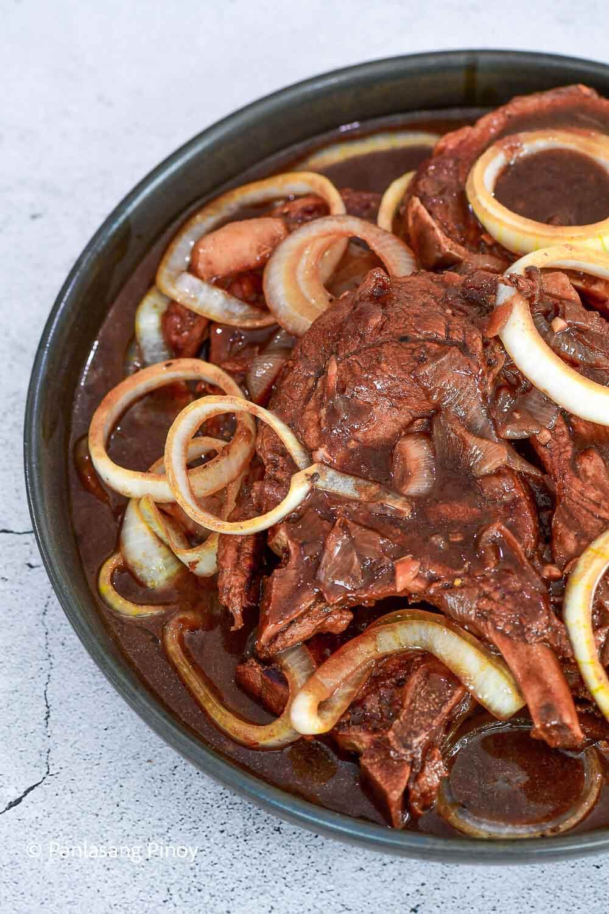

Pork Steak

Pork Steak, or Filipino Bistek, features tender pork slices
simmered in a flavorful mix of soy sauce, calamansi juice,
and onions.
Ingredients:
2pcs white onions (sliced)
1/2 teaspoon granulated white sugar
Steps:
- Combine pork chops, soy sauce, and lime juice in a large
bowl or resealable bag. Marinate for at least 1 hour.
- Heat a pan then pour-in cooking oil.
- Pan-fry the marinated pork chops in medium heat for 3
minutes per side.
- Remove excess oil. Pour-in the remaining marinade and
water and let boil. Simmer for 45 minutes or until the
pork is tender. Note: Add water as needed.
- Add-in the sugar, salt, and pepper then stir.
- Put-in the onions and cook for 3 minutes more.
- Turn-off heat and transfer to a serving plate.
- Serve. Share and enjoy!
Home